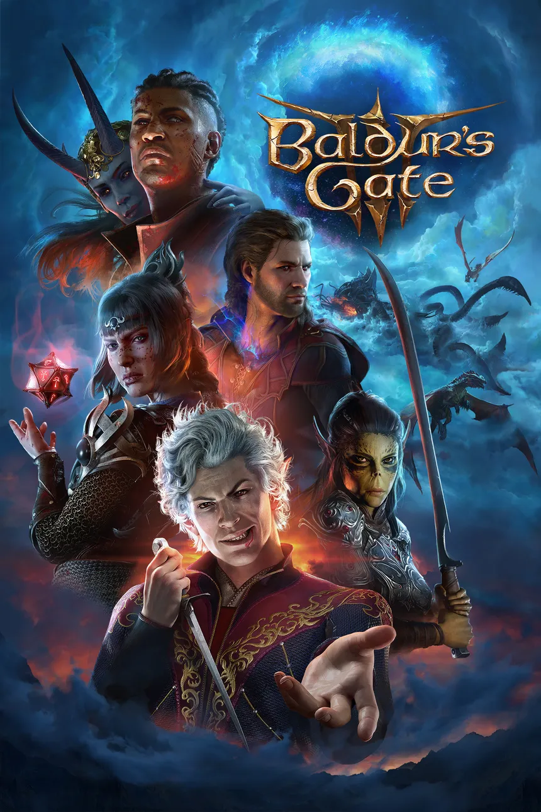

- Desarrollador: Larian Studios
- Editor: Larian Studios
- Género: Rol, Acción RPG (Fantasía y Mazmorras)
- Jugadores: 1-4 (Cooperativo: 2-4)
- Duración: 40-45 (mínimo)
- Idioma: Textos en español y voces en inglés
- Lanzamiento: 3 de agosto de 2023 (Pegi: +18)
Baldurs gate 3
Baldur's Gate 3 es la última entrega de una de las sagas de juegos de rol más queridas por los jugadores de todo el mundo. Desarrollado por Larian Studios, los creadores de la exitosa serie de aventuras roleras Divinity: Original Sin, este juego ha generado mucha expectación y emoción entre los fanáticos del género. Aquí tienes un resumen de las características clave de Baldur's Gate 3:
- Herencia de Baldur's Gate: Este juego continúa la tradición de la icónica saga Baldur's Gate, que es conocida por su rica narrativa y profundidad en el rol de fantasía. La historia se desarrolla en el mundo de Dungeons & Dragons de la mano de la marca Wizard of the Coast.
- Personalización de personajes: Los jugadores tienen una gran libertad para diseñar a su aventurero, con 12 clases y 46 subclases disponibles. Esto permite crear personajes únicos y variados.
- Sistema de elección y consecuencia: El juego ofrece una amplia gama de opciones para abordar misiones y situaciones. Puedes elegir cómo enfrentar los desafíos, ya sea con fuerza, sigilo, engaños, intimidación u otras tácticas ingeniosas. Cada elección tiene un impacto en la historia y el mundo del juego.
- Amplitud y duración: Baldur's Gate 3 es un juego extenso con un mundo abierto y una cantidad sustancial de contenido. La duración del juego varía según el estilo de juego, pudiendo oscilar entre 35-40 horas si sigues directamente la historia principal, o llegar hasta 200 horas si exploras todo el mapa y te sumerges en las misiones secundarias y secretos del juego.
- Multijugador cooperativo: Puedes jugar solo, controlando a un grupo de aventureros, o unirte a amigos en una experiencia multijugador cooperativa para hasta 4 personas. Esto brinda la oportunidad de compartir la emocionante aventura con otros jugadores.
- En resumen, Baldur's Gate 3 es un retorno muy esperado para los fanáticos de los juegos de rol y ofrece una experiencia profunda y rica en un mundo de fantasía. La capacidad de elección y consecuencia, la personalización de personajes y el componente multijugador hacen que este juego sea un título destacado para los amantes del género.